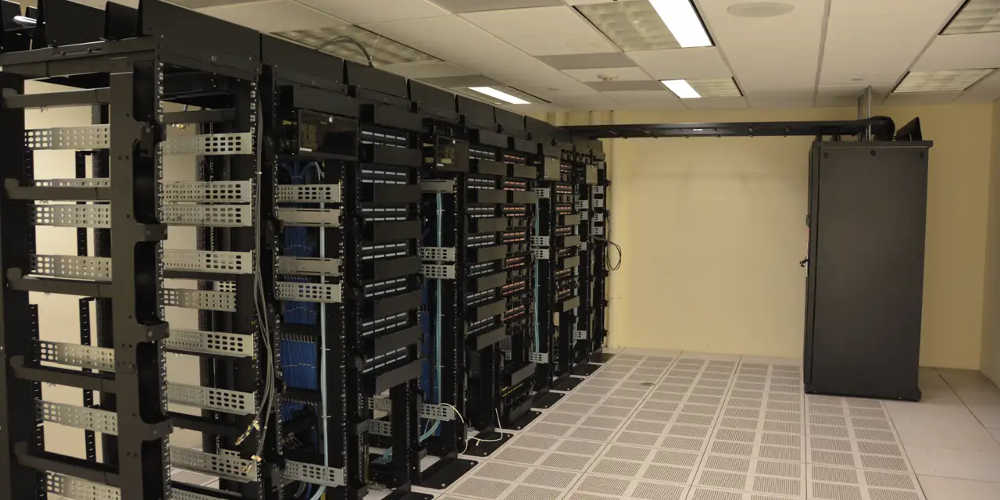

네비우스 그룹 주주가 지금 가장 궁금해할 질문은 “AI 클라우드 수요가 있느냐”가 아닙니다. 수요는 이미 숫자로 드러나고 있습니다. 더 중요한 질문은 2026년 말 ARR 70억~90억 달러라는 목표가 데이터센터 전력, GPU 조달, 고객 사용률, 자금조달 비용을 지나 실제 매출과 현금흐름으로 바뀔 수 있느냐입니다. AI 클라우드는 겉으로는 소프트웨어처럼 보이지만, 속을 열어 보면 전력과 부지, 냉각, 서버, 부채가 함께 움직이는 중자본 사업입니다.
네비우스의 2026년 1분기 실적 발표와 주주서한을 보면 시장이 주목한 이유는 분명합니다. 2026년 1분기 그룹 매출은 3억9,900만 달러였고, 이 가운데 Nebius AI Cloud 매출은 3억8,970만 달러로 거의 대부분을 차지했습니다. 3월 말 ARR은 19억2,000만 달러였고, 회사는 2026년 매출 30억~34억 달러와 연말 ARR 70억~90억 달러를 제시했습니다. 성장률만 보면 작은 클라우드 회사가 갑자기 대형 AI 인프라 회사처럼 평가받는 이유가 생깁니다.
다만 이 글에서 먼저 볼 것은 목표의 크기가 아니라 목표가 지나가야 할 통로입니다. 네비우스는 2026년 말 연결 전력 800MW~1GW를 기대하고, 미국 펜실베이니아에 최대 1.2GW 규모 AI factory를 단계적으로 구축하겠다고 밝혔습니다. 이 숫자는 멋있지만 동시에 무겁습니다. 전력 계약은 매출이 아니라 준비물이고, GPU는 자산이 아니라 시간이 지나면 감가상각되는 장비입니다. 주주는 ARR 목표를 볼 때마다 그 옆에 전력 연결, 가동률, 감가상각비, 차입 조건을 같이 놓아야 합니다.
ARR 목표는 계약서가 아니라 용량 예약입니다

ARR은 반복 매출의 속도를 보여주는 좋은 지표입니다. 그러나 AI 클라우드에서 ARR은 완성된 매출표라기보다 고객이 앞으로 쓰겠다고 잡아 둔 용량 예약에 가깝습니다. 고객이 GPU 클러스터를 장기 예약하고, 네비우스가 그 용량을 일정에 맞춰 열고, 고객 워크로드가 실제로 돌아가야 매출이 됩니다. 그러니 ARR이 커질수록 “얼마나 계약했나”보다 “언제 연결되고 얼마나 찼나”가 더 중요해집니다.
네비우스의 좋은 점은 수요의 방향이 뚜렷하다는 데 있습니다. AI 모델 회사와 기업 고객은 학습보다 추론, 실험보다 운영, 데모보다 생산 환경으로 이동하고 있습니다. 이 과정에서 자체 데이터센터를 짓기 어려운 고객은 GPU 클라우드를 찾습니다. 네비우스가 NVIDIA와 깊은 기술 협력을 맺고, GB300 NVL72 학습 워크로드에서 NVIDIA Exemplar Cloud 지위를 확보했다고 밝힌 점은 고객 신뢰를 높이는 신호입니다.
그럼에도 주주가 숫자를 읽는 순서는 차분해야 합니다. ARR 19억2,000만 달러에서 70억~90억 달러로 가려면 단순 영업력이 아니라 물리적 용량이 필요합니다. 수요가 아무리 강해도 전력 연결이 늦어지면 고객에게 제공할 컴퓨트가 부족합니다. 반대로 용량을 너무 빨리 열었는데 고객 사용률이 예상보다 낮으면 감가상각과 전력 비용이 먼저 손익계산서에 올라옵니다. 네비우스의 주가는 이 두 위험 사이에서 움직일 가능성이 큽니다.
전력 1GW는 성장 약속이면서 비용 약속입니다
관련 영상
네비우스·코어위브·아이렌 AI 클라우드 경쟁을 비교하는 한국어 롱폼 영상
AI 데이터센터에서 전력은 토지보다 더 중요한 원재료가 될 때가 많습니다. 건물을 지어도 전력이 연결되지 않으면 GPU는 매출을 만들 수 없습니다. 네비우스가 2026년 말 연결 전력 800MW~1GW를 기대한다고 밝힌 것은 강력한 성장 신호입니다. 동시에 그만큼의 장기 계약, 부지, 장비 발주, 운영 인력, 냉각 설비가 필요하다는 뜻이기도 합니다.
펜실베이니아 최대 1.2GW AI factory 계획도 같은 방식으로 봐야 합니다. 이 계획은 네비우스가 단기 GPU 임대 회사가 아니라 장기 인프라 플랫폼이 되려는 의지를 보여줍니다. 그러나 2027년부터 단계적으로 제공되는 용량은 오늘의 매출이 아닙니다. 투자자는 발표된 전력 규모와 실제 active power를 구분해야 합니다. contracted power는 확보한 약속이고, connected power는 연결된 전력이며, active power는 실제 장비가 돌아가 매출을 만들 수 있는 전력입니다.
이 구분을 놓치면 AI 클라우드 기업을 지나치게 낙관적으로 보게 됩니다. 전력 확보 발표는 주가를 끌어올릴 수 있지만, 연결과 장비 설치가 늦어지면 가이던스 달성은 흔들립니다. 특히 GPU 세대가 빠르게 바뀌는 시장에서는 늦게 들어온 장비가 더 빨리 낡아 보일 수 있습니다. 네비우스가 Vera Rubin NVL72와 Blackwell 계열 인프라를 언급하는 이유는 최신 장비 경쟁에서 뒤처지지 않겠다는 뜻이지만, 최신 장비일수록 조달과 자금 부담도 커집니다.
코어위브와 비교하면 장점과 부담이 같이 보입니다
네비우스를 볼 때 코어위브를 함께 보는 이유는 단순합니다. 두 회사 모두 AI 클라우드 수요를 정면으로 받고 있지만, 그 수요를 주주 수익으로 바꾸는 방식은 아직 검증 중입니다. 코어위브의 2026년 1분기 실적은 매출 20억7,800만 달러, 매출 백로그 994억 달러, 조정 EBITDA 11억5,700만 달러를 보여줬습니다. 숫자만 보면 네비우스보다 훨씬 큰 회사처럼 보입니다.
하지만 같은 발표에서 코어위브는 순손실 7억4,000만 달러와 이자비용 5억3,600만 달러도 함께 보여줬습니다. 이것이 AI 클라우드 사업의 진짜 얼굴입니다. 매출과 백로그가 폭발적으로 커져도, 데이터센터와 GPU를 미리 깔아야 하는 사업은 부채와 감가상각이 따라옵니다. 네비우스가 앞으로 코어위브처럼 빠르게 커진다면 시장은 매출 성장뿐 아니라 순손실, 이자비용, 설비투자 회수 기간도 더 집요하게 볼 가능성이 큽니다.
네비우스의 상대적 장점은 아직 성장 초입에 있어 기대가 더 유연하다는 점입니다. NVIDIA 투자와 전략 협력, Microsoft와 Meta 같은 대형 고객 언급, 유럽과 미국의 전력 입지 확대는 시장이 좋아할 만한 재료입니다. 반대로 상대적 부담은 가이던스가 이미 매우 크다는 점입니다. 2026년 말 ARR 70억~90억 달러는 작은 실수에도 주가가 예민하게 반응할 수 있는 목표입니다. 기대가 커진 회사는 “좋은 실적”만으로 부족하고 “기대보다 정확한 실행”을 보여줘야 합니다.
주주가 다음 분기에 볼 숫자
첫 번째 숫자는 ARR의 절대 규모보다 분기별 증가 속도입니다. 19억2,000만 달러에서 연말 70억~90억 달러로 가려면 매 분기 강한 계단식 상승이 필요합니다. 두 번째는 그룹 매출이 아니라 Nebius AI Cloud 매출입니다. 2026년 1분기에는 AI Cloud가 그룹 매출의 약 98%였기 때문에, 이 부문 매출이 사실상 회사의 본체입니다. 성장률이 유지되는지, 고객군이 넓어지는지, 특정 대형 고객 의존도가 과해지는지 확인해야 합니다.
세 번째는 감가상각비와 원가율입니다. 네비우스의 2026년 1분기 감가상각비는 2억1,200만 달러였고, 회사는 서버와 네트워크 장비 내용연수를 4년에서 5년으로 바꿨다고 밝혔습니다. 회계 추정 변경은 비용 인식 속도에 영향을 줍니다. 투자자는 이 변화를 나쁘게만 볼 필요는 없지만, 장비 수명과 GPU 교체 주기가 실제 사용 패턴과 맞는지 계속 봐야 합니다.
네 번째는 현금과 자금조달 조건입니다. 회사는 자금조달 후 90억 달러 이상의 현금을 언급했지만, AI factory를 여러 곳에서 동시에 확장하면 현금은 빠르게 설비와 장비로 바뀝니다. 좋은 시나리오는 고객 선지급과 전략 투자, 우호적 차입 조건이 설비투자를 흡수하는 것입니다. 나쁜 시나리오는 주가가 높을 때 추가 주식 발행이나 전환증권이 반복되어 주당 가치가 희석되는 것입니다.
결론은 단순합니다. 네비우스 그룹은 AI 클라우드 수요를 가장 직접적으로 받는 흥미로운 종목입니다. 그러나 이 회사의 핵심 질문은 “AI가 뜨느냐”가 아니라 “전력과 GPU를 제때 열고, 고객이 높은 가격으로 계속 쓰며, 그 과정에서 주주 몫이 희석되지 않느냐”입니다. 주주는 ARR 90억 달러라는 큰 숫자에 먼저 반응하기보다, active power, AI Cloud 매출, 감가상각비, 이자비용, 고객 집중도를 분기마다 나란히 놓고 판단해야 합니다.